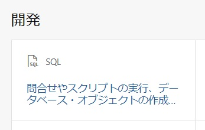
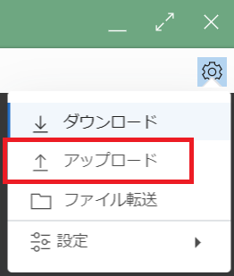
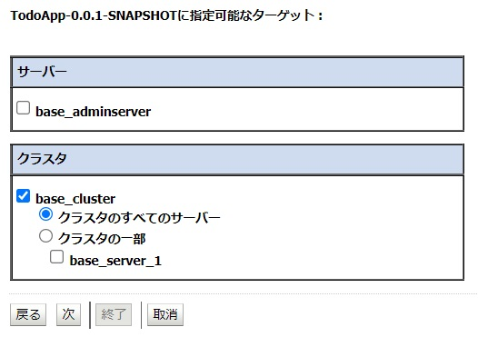

前提条件
- クラウド環境
- Oracle Cloudのアカウントを取得済みであること
ハンズオンの全体像
- WebLogic Server for OCI(移行元環境)をプロビジョニング
- 移行元となるWebLogic Server for OCI(UCM)環境を作成します
- アプリケーションが利用するAutonomous Databaseを作成します
- 移行元WebLogicにデータベースの設定を行います
- 移行元WebLogicにアプリケーションをデプロイします
- 移行先環境を移行元環境と同一サブネットに作成
- 移行元環境より移行ファイルを抽出
- 移行ファイルを編集
- 移行先環境に移行ファイルを適用
Note: 移行元/移行先のデータベースに関して
本ハンズオンでは、移行元と移行先で同一データベースを利用しますが、異なるスキーマを利用します。実際の移行では、接続先となるデータベースそのものが異なる場合が考えられます。

Note: ツールで移行可能なファイル
本ハンズオンで利用する移行ツールのWebLogic Deploy Toolingでは、アプリケーション/アプリケーションの構成 以外のファイルは移行できません。 そのため、アプリケーションが利用するファイル(例: データベースウォレット)などの移行は手作業で行う必要があります。
本ハンズオンでは、データベースにAutonomous Databaseを利用しているため、データベースウォレットの手動以降が必要になります。

事前準備
1. SSHキーペアを用意する
任意のSSHキーペアをご用意ください。
新たに作成する場合は、左上のハンバーガーメニューを展開して、「コンピュート」から「インスタンス」を選択し、「インスタンスの作成」をクリックします。
作成画面より、SSHキーの「秘密キー」と「公開キー」の両方をダウンロードし、利用します。

2. OCI VaultでSecretを作成する
WebLogic Server for OCIでは、WebLogic作成時の管理用パスワードはOCI Vaultにて管理します。
左上のハンバーガーメニューを展開して、「アイデンティティとセキュリティ」から「ボールト」を選択します。

「ボールトの作成」をクリックします。

名前に「handson vault」と入力し、「ボールトの作成」をクリックします。

ボールトの作成には数分かかる場合があります。適宜ブラウザの更新を行ってください。
作成したボールト名をクリックし、「キーの作成」をクリックします。

名前に「handson key」と入力し、「キーの作成」をクリックします。

「シークレット」をクリックし、「シークレットの作成」をクリックします。

名前に「wlsadmin」と入力し、暗号化キーは「handson key」を選択し、シークレットコンテンツは「welcome1」と入力し、「シークレットの作成」をクリックします。

3. アプリケーションの取得
こちらより、本ハンズオンで利用するアプリケーションをダウンロードしてください。
4. OCI IAMで権限の設定を行う(Optional)
WebLogic Server for OCI の利用には以下の2種類のポリシー設定が必要です。
あらかじめこれらの権限設定を実施した上で、WebLogic Server for OCIによるプロビジョニングを行います。
- WebLogic Server for OCI環境の管理者が所属するグループに対するポリシー
- WebLogic Server for OCI のWebコンソールの利用や作成後のリソース/環境の管理に必要な権限
- WebLogic Server for OCI が利用する動的グループに対するポリシー
- WebLogic Server for OCIがプロビジョニングを行う際に必要な権限
この手順では、ルート・コンパートメントにプロビジョニングを行うため、自動でこれらの権限が設定されます。
- WebLogic Server for OCIがプロビジョニングを行う際に必要な権限
1.移行元環境の作成
移行元となるWebLogic Server環境を作成します。
1.1. マーケットプレイスにてスタックを起動する
左上のハンバーガーメニューを展開して、「マーケットプレイス」から「すべてのアプリケーション」を選択します。

検索欄に「Oracle WebLogic Server Enterprise Edition UCM」と入力し、先頭に出てくるパネルをクリックします。

バージョンは12.2.1.4を選択します。

12.2.1.4.*** の *** の部分はキャプチャと異なる場合があります。
チェックボックスにチェックを入れ、「スタックの起動」をクリックします。

1.2. WebLogic Server for OCIをプロビジョニングする
Note: 特に記載のない部分に関してはデフォルトの値で構いません
名前に「handson_base」と入力し、「次」をクリックします。

「Resource Name Prefix」 に「base」と入力します。

「SSH Public Key」では、事前準備で作成したSSH Keyを選択します。
「Validated Secret for WebLogic Server Admin Password」では、事前準備で作成したSecret(wlsadmin)を選択します。

「Virtual Cloud Network Strategy」は「Create new VCN」を選択し、「WebLogic Server Network」は 「wls_handson」と入力します。

「次」をクリックし、「作成」をクリックします。
Note: 作成完了までは10分ほどかかります。その間に次の「1.3. データベースをセットアップする」に進んでいただいても構いません。
1.3. データベースをセットアップする
Note: 移行元/移行先のデータベースに関して
この手順では、移行元と移行先で同一データベースのスキーマのみを変更しています。実際の移行では、接続先となるデータベースが異なる場合が考えられます。その場合、接続先のJDBC URLが異なる場合がございますので、ご注意ください
左上のハンバーガーメニューを展開して、「Oracle Database」から「Autonomous Transaction Processing」を選択します。

「Autonomous Databaseの作成」をクリックします。

「表示名」に「handson_db」、「データベース名」に「handsonDB」と入力します。

「パスワード」と「パスワードの確認」に「Welcome1234!」と入力します。

「ライセンスとOracle Databaseエディションの選択」は「ライセンス込み」を選択します。

「Autonomous Databaseの作成」をクリックします。
ステータスが「使用可能」になったら、「DB接続」をクリックします。

「ウォレットのダウンロード」をクリックします。※この後の手順で利用するためにダウンロードしておきます。

「パスワード」と「パスワードの確認」に任意のパスワードを入力し、「ダウンロード」をクリックします。※本ハンズオンでは利用しないのでなんでも構いません。
データベース・アクションをクリックします。

「ユーザー名」にADMIN、「パスワード」にWelcome1234!と入力します。※セッションの関係で、入力の必要がない場合があります。

「SQL」のパネルをクリックします。

以下のSQLをワークシートに貼り付け、F5を押下し全文を実行します。
CREATE TABLE "ADMIN"."TODO_HEAD"
(
"RID" NUMBER(10,0),
"STATUS" NUMBER(2,0),
"TITLE" VARCHAR2(100 BYTE),
"MEMO" VARCHAR2(1000 BYTE),
"IMPORTANCE" NUMBER(2,0),
"INCHARGE" NUMBER(10,0),
"CREATE_DATE" DATE,
"MODIFY_DATE" DATE
);
INSERT INTO "ADMIN"."TODO_HEAD"
(
"RID",
"STATUS",
"TITLE",
"MEMO",
"IMPORTANCE",
"INCHARGE",
"CREATE_DATE",
"MODIFY_DATE"
) VALUES (
0,
0,
'TODO TITLE',
'TODO MEMO',
0,
1000,
sysdate,
sysdate
);
先ほど実行したSQL文を削除し、以下のSQLを新たに貼り付けF5を押下し全文を実行し、移行先環境が利用するスキーマを作成します。
-- USER SQL
CREATE USER "DEST" IDENTIFIED BY "Welcome1234!";
-- ADD ROLES
GRANT CONNECT TO DEST;
GRANT RESOURCE TO DEST;
ALTER USER DEST DEFAULT ROLE CONNECT,RESOURCE;
-- ENABLE REST
BEGIN
ORDS.ENABLE_SCHEMA(
p_enabled => TRUE,
p_schema => 'DEST',
p_url_mapping_type => 'BASE_PATH',
p_url_mapping_pattern => 'dest',
p_auto_rest_auth=> TRUE
);
commit;
END;
/
-- QUOTA
ALTER USER DEST QUOTA UNLIMITED ON DATA;
画面右上、「ADMIN」をクリックし、「サインアウト」をクリック

「サインイン」をクリックし、「ユーザー名」にDESTと入力し、「次」をクリックします。
その後、「パスワード」にWelcome1234!と入力し、DESTユーザーでログインします。
「SQL」のパネルをクリックします。
以下のSQLをワークシートに貼り付け、F5を押下し全文を実行。
CREATE TABLE "DEST"."TODO_HEAD"
(
"RID" NUMBER(10,0),
"STATUS" NUMBER(2,0),
"TITLE" VARCHAR2(100 BYTE),
"MEMO" VARCHAR2(1000 BYTE),
"IMPORTANCE" NUMBER(2,0),
"INCHARGE" NUMBER(10,0),
"CREATE_DATE" DATE,
"MODIFY_DATE" DATE
);
INSERT INTO "DEST"."TODO_HEAD"
(
"RID",
"STATUS",
"TITLE",
"MEMO",
"IMPORTANCE",
"INCHARGE",
"CREATE_DATE",
"MODIFY_DATE"
) VALUES (
0,
0,
'TODO TITLE',
'TODO MEMO',
0,
1000,
sysdate,
sysdate
);
1.4. 作成したWebLogic Server for OCIにJDBC接続の設定を行う
左上のハンバーガーメニューを展開して、「コンピュート」から「インスタンス」を選択します。

「base-bastion-instance」のパブリックIPと「base-wls-0」のプライベートIPを確認します。

Note: SSHクライアントに関して
ここからの手順は、OCI Cloud Shellを用いてSSH接続を行います。
使い慣れたCUIのSSHクライアントツール(TeraTermやVS Codeなど)を用いて作業しても構いません。
コンソール右上、OCI Cloud ShellのアイコンをクリックしてOCI Cloud Shellを開きます。

Cloud Shell上の歯車アイコンをクリックし、「アップロード」をクリックし、ダイアログから
- SSH Key(Private key)
- 取得したデータベース接続用のWallet
をアップロードします。

SSH Key の Permissionを変更します
chmod 600 <ssh key>
Walletを作成したWebLogic Server for OCIのインスタンスにscpで転送します。
scp -i <SSH Keyのパス> \
-o ProxyCommand='ssh -i <SSH Keyのパス> \
-W %h:%p opc@<base-bastion-instanceのパブリックIP>' \
~/Wallet_handsonDB.zip opc@<base-wls-0のプライベートIP>:~/
以下コマンドを実行し、WebLogicインスタンスにSSHログインします。
※Are you sure you want to continue connectingにはyesを選択します。
ssh -i <SSH Keyのパス> \
-o ProxyCommand='ssh -i \
<SSH Keyのパス> -W %h:%p opc@<base-bastion-instanceのパブリックIP>' \
opc@<base-wls-0のプライベートIP>
rootユーザーにスイッチします。
sudo su -
ファイルを移動します。
mv /home/opc/Wallet_handsonDB.zip /home/oracle/
所有者を変更します。
chown oracle:oracle /home/oracle/Wallet_handsonDB.zip
ログアウトします。
exit
oracleユーザーにスイッチします。
sudo su - oracle
Walletをunzipします。
unzip Wallet_handsonDB.zip -d handsondb
Note: 以下手順はローカル端末のコマンドプロンプト(Windows 10)など、任意のコマンドライン・アプリケーションを利用してください。
コマンド内、<SSH Keyのパス>、 <base-bastion-instanceのパブリックIP>、<base-wls-0のプライベートIP> をそれぞれ書き換え、実行します。
ssh -i <SSH Keyのパス> opc@<base-bastion-instanceのパブリックIP> \
-L 7001:<base-wls-0のプライベートIP>:7001
別ウィンドウまたは別タブでhttp://localhost:7001/console/ にブラウザ上よりアクセスし、以下を入力しWebLogicにログインします。
- ユーザー名:
weblogic - パスワード:
welcome1
「ロックして編集」をクリックし、左メニューより「サービス」横の＋ボタンをクリックし、「データ・ソース」をクリックします。
「新規」をクリックし、「汎用データ・ソース」をクリックします。

「名前」に「Handson」と入力し、「JNDI名」に「handsonDB」と入力し、「次」をクリックします。

「次」をクリックし、「次」をクリックします。
「データベース名」と「ホスト名」に任意の値を入力し、「データベース・ユーザー名」には「ADMIN」、「パスワード」と「パスワードの確認」には「Welcome1234!」と入力します。

Note: データベース名とホスト名
Autonomous Databaseに接続する場合、ここで入力する値は次の画面で書き換えることとになるので、任意の値で構いません。
URLにjdbc:oracle:thin:@handsondb_tpと入力し、プロパティに
oracle.net.tns_admin=/home/oracle/handsondb
user=ADMIN
oracle.net.wallet_location=/home/oracle/handsondb
oracle.jdbc.fanEnabled=false
oracle.net.ssl_version=1.2
oracle.net.ssl_server_dn_match=true
と入力し、「次」をクリックします。

「base_cluster」を選択し、「終了」をクリックします。

「変更のアクティブ化」をクリックします。

1.5. WebLogic Server for OCIにアプリケーションをデプロイする
「ロックして編集」をクリックし、メニューより「デプロイメント」をクリックします。

「インストール」をクリックします。

「ファイルをアップロード」をクリックします。

「デプロイメント・アーカイブ」の「ファイルを選択」をクリックします。

配布したWARファイルをアップロードし、「次」をクリックします。
「次」をクリックし、「次」をクリックします。
「base_cluster」を選択し、「次」をクリックします。 
「終了」をクリックします。

「変更のアクティブ化」をクリックします。
「ロックして編集」をクリックし、「制御」タブをクリックします。

「TodoApp-0.0.1-SNAPSHOT」にチェックを入れ、「起動」をクリックし、「すべてのリクエストを処理」をクリックします。

「はい」をクリックします。
1.6. アプリケーションにアクセスする
左上のハンバーガーメニューを展開して、「ネットワーキング」から「ロード・バランサ」を選択します。

「base-lb」のIPアドレスを確認します。

https://<ロードバランサーのIPアドレス>/todo/ にブラウザ上よりアクセスし、アプリケーションが表示されることを確認します。
2.移行先環境(WebLogic Server for OCI)の作成
移行後のWebLogic Server環境を作成します。
2.1. マーケットプレイスにてスタックを起動する
左上のハンバーガーメニューを展開して、「マーケットプレイス」から「すべてのアプリケーション」を選択します。
検索欄に「WebLogic Server Enterprise Edition UCM」と入力し、先頭に出てくるパネルをクリックします。
チェックボックスにチェックを入れ、「スタックの起動」をクリックします。

2.2. WebLogic Server for OCIをプロビジョニングする
Note: 特に記載のない部分に関してはデフォルトの値で構いません
名前に「handson_dest」と入力し、「次」をクリックします。

Resource Name Prefix に「dest」と入力します。

SSH Public Keyでは、事前準備で作成したSSH Keyを選択します。
Validated Secret for WebLogic Server Admin Passwordでは、事前準備で作成したSecret(wlsadmin)を選択します。
Existing Networkは「base-wls_handson」を選択し、Validated Existing Networkに「YES」と入力します。

Existing Subnet for WebLogic Serverは「base-wl-subnet」を選択します。

Existing Subnet for Bastion Hostは「base-bsubnet」を選択します。

Existing Subnet for Load Balancerは「base-lbpubst1」を選択します。

「次」をクリックし、「作成」をクリックします。
3.移行ファイルの抽出
WebLogic Deploy Tooling (WDT)を利用して、アプリケーションなどの移行ファイルを移行元環境より抽出します。
3.1. WDT をインストールする
コンソール右上、OCI Cloud ShellのアイコンをクリックしてOCI Cloud Shellを開きます。
WDTをダウンロードします。
wget https://github.com/oracle/weblogic-deploy-tooling/releases/download/release-2.3.2/weblogic-deploy.zip
WDTとSSH KeyをSCPで転送します。
scp -i <SSH Keyのパス> \
-o ProxyCommand='ssh -i <SSH Keyのパス> \
-W %h:%p opc@<base-bastion-instanceのパブリックIP>' \
~/weblogic-deploy.zip <SSH Key> opc@<base-wls-0のプライベートIP>:~/
以下コマンドを実行し、移行元のWebLogicインスタンス(base-wls-0)にSSHログインします。
ssh -i <SSH Keyのパス> \
-o ProxyCommand='ssh -i <SSH Keyのパス> \
-W %h:%p opc@<base-bastion-instanceのパブリックIP>' \
opc@<base-wls-0のプライベートIP>
rootユーザーにスイッチします。
sudo su -
WDTとSSH Keyをoracleユーザーが利用できるようにします。
mv /home/opc/weblogic-deploy.zip /home/oracle/
mv <SSH Key> /home/oracle/
chown oracle:oracle /home/oracle/weblogic-deploy.zip
chown oracle:oracle <SSH Key>
oracleユーザーにスイッチします。
sudo su - oracle
WDTをunzipします。
unzip weblogic-deploy.zip
WDTスクリプトの権限変更を行います。
chmod +x weblogic-deploy/bin/*.sh
3.2. 移行ファイルを抽出する
以下のdiscoverDomainコマンドを利用して、移行ファイルの抽出を行います。
weblogic-deploy/bin/discoverDomain.sh \
-oracle_home $MW_HOME \
-domain_home $DOMAIN_HOME \
-archive_file ./source.zip \
-model_file ./source.yaml \
-variable_file source.properties \
4.移行ファイルの編集
Cloud Shell上のVimなど任意のテキストエディタで、移行ファイル(WDTモデルファイル)を編集します。
4.1. source.propertiesファイルの編集
source.propertiesは、モデルファイル(source.yaml)で利用する変数をまとめたファイルです。
JDBC.handsonDB.PasswordEncryptedにWelcome1234!
JDBC.Handson.user.ValueはDESTと入力します。
JDBC.handsonDB.PasswordEncrypted=Welcome1234!
JDBC.Handson.user.Value=DEST
4.2. source.yamlファイルの編集
source.yamlは、WebLogicドメインをモデル化したファイルです。
domainInfoフィールドとtopologyフィールドをすべて削除します。
resoucesフィールドとappDeploymentsフィールドのみが残ります。
Handson DBフィールド下のTargetはbase_clusterをdest_clusterと変更します。
resources:
JDBCSystemResource:
Handson DB:
Target: dest_cluster #変更
TodoApp-0.0.1-SNAPSHOTフィールド下のTargetはbase_clusterをdest_clusterと変更します。
appDeployments:
Application:
TodoApp-0.0.1-SNAPSHOT:
SourcePath: wlsdeploy/applications/TodoApp-0.0.1-SNAPSHOT.war
ModuleType: war
Target: dest_cluster #変更
StagingMode: stageをappDeployments内のTarget: handson_adminserverの下に追加します。
appDeployments:
Application:
TodoApp-0.0.1-SNAPSHOT:
SourcePath: wlsdeploy/applications/TodoApp-0.0.1-SNAPSHOT.war
ModuleType: war
Target: handson_adminserver
StagingMode: stage #追加
4.3. WDTモデルファイルを移行先管理サーバに転送する
WDT、移行ファイル、Walletを移行先のWebLogic Server for OCIのインスタンスにscpで転送します。
scp -i <SSH Key> weblogic-deploy.zip source.* \
Wallet_handsonDB.zip opc@<移行先インスタンスのPrivate IP>:~/
移行先のWebLogic Server for OCIのインスタンスにSSH接続します。
ssh -i [SSH Keyの名前] opc@[移行先インスタンスのPrivate IP]
WDT、移行ファイル、Walletの所有者を変更します。
sudo chown oracle:oracle *
ファイルすべてを移動します。
sudo mv * /home/oracle/
oracleユーザにスイッチします。
sudo su - oracle
Walletをunzipします。
unzip -d handsondb Wallet_handsonDB.zip
WDTをunzipします。
unzip weblogic-deploy.zip
WDTの権限変更を行います。
chmod +x weblogic-deploy/bin/*.sh
5.移行ファイルの適用
移行ファイルを移行先環境に適用し、移行が正常に行われることを確認します。
5.1. 移行ファイルを移行先環境に適用する
以下のコマンドを実行し、WebLogic Server for OCIにデプロイを行います。
weblogic-deploy/bin/updateDomain.sh \
-oracle_home $MW_HOME \
-domain_home $DOMAIN_HOME \
-model_file source.yaml \
-variable_file source.properties \
-archive_file source.zip \
-admin_url t3://$(hostname -i):9071
コマンドを実行すると、ユーザー名とパスワードを聞かれます。
それぞれweblogic, wilcome1と入力してください。
5.2. アプリケーションの動作確認を行う
<Load Balancer IP>を移行先のものに置き換えて、アプリケーションにアクセスします。
https://<Load Balancer IP>/todo